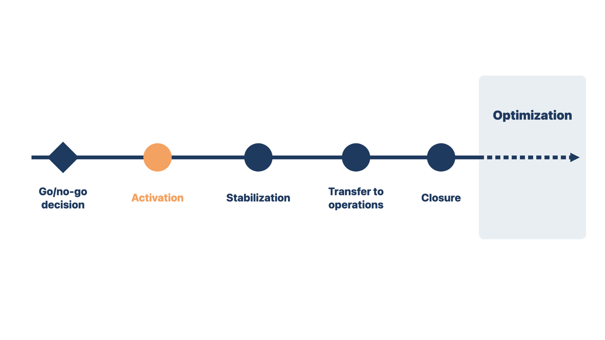
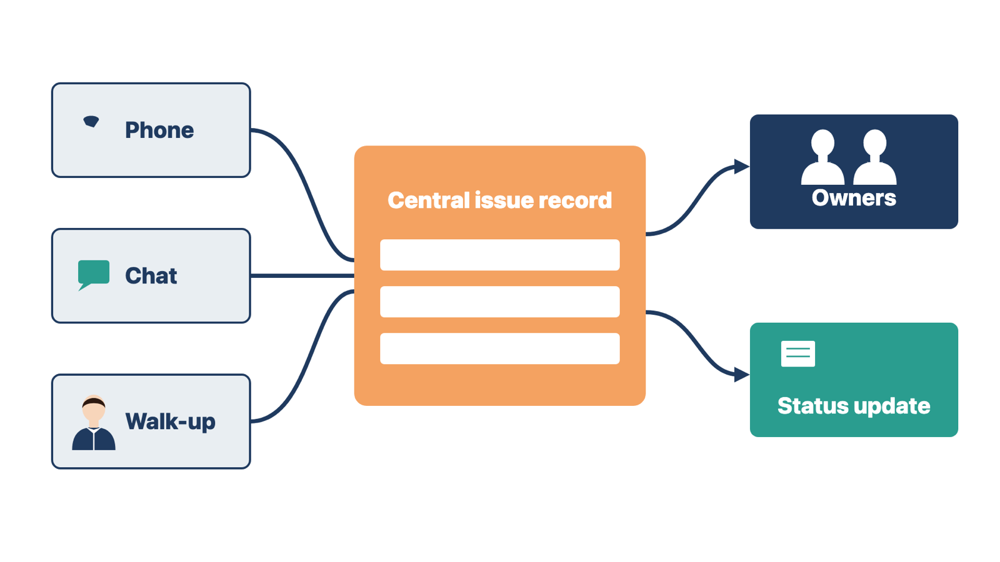
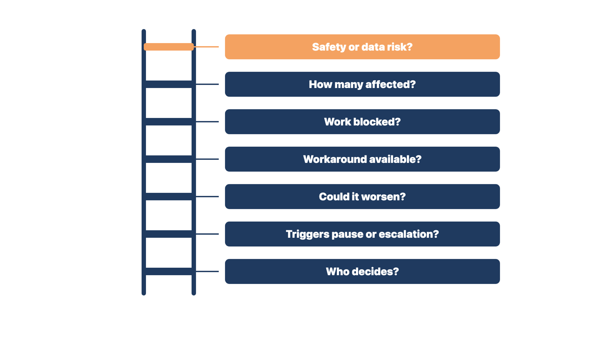
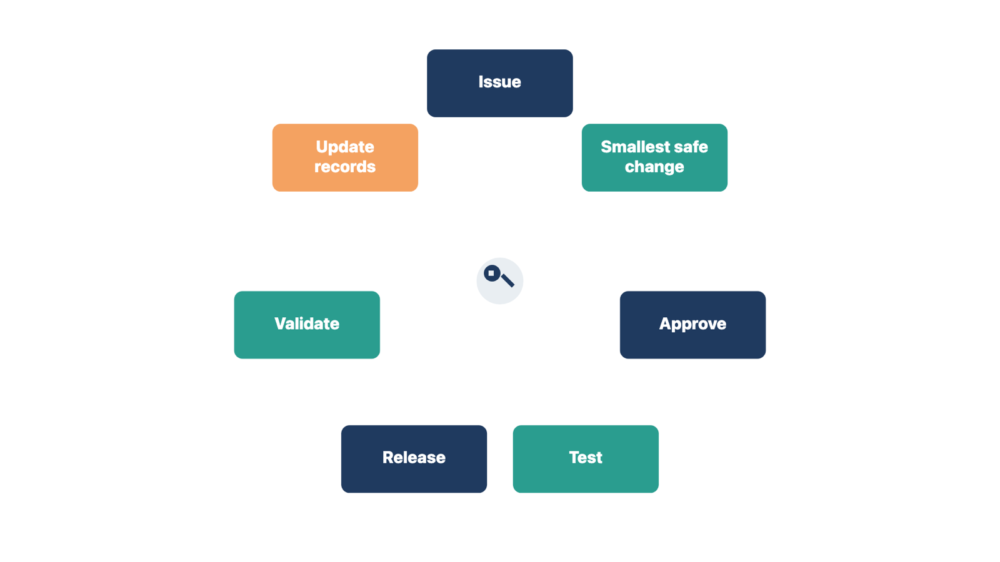
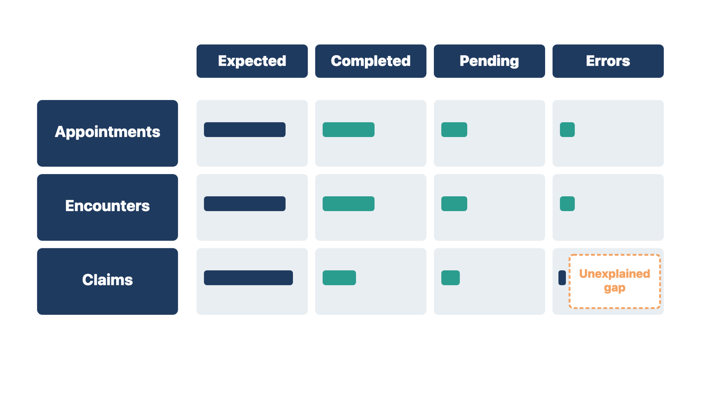

A go-live decision rests on the facts at the time it was made. If the facts change before start, the clinic may go live on risks nobody approved.
Activation is the moment the clinic starts real work in the new system. Before activation, confirm that the go-live decision still applies. Some changes may need a new decision. Examples are a new critical defect, a failed final conversion, missing access, or an interface that does not work. A staffing emergency or a security incident can also change the picture.

Run the final pre-start check:
Record the time and the person who authorizes activation.
Rule: If a must-pass condition changes after approval, the person who approved go-live decides again.
Two examples show the rule. At Cedar Point, the Lakeshore lab results interface fails a test message 50 minutes before start. You hold activation and ask the practice administrator for a new decision. At a small family clinic, the final conversion count is short by 300 patients on start morning. You report the gap to the person who approved go-live before anyone signs in. In both cases, the approval covered the facts on approval day, not the facts on start day.
Check yourself
During go-live, reports arrive by phone, chat, and walk-up. Without one shared record, the team fixes the same problem twice and loses track of what changed.
The command function is the team that runs go-live support. It may be a physical room, a virtual channel, or a set of people who work together. It needs one shared picture of what is happening. The issue record is the single log of every reported problem.

Track these fields for each issue:
A workaround is a temporary way to get the work done while the problem is open. Severity describes how much harm the problem causes, as you learned in Module 7.
Chat is fast, and you should use it to respond. But chat does not replace the issue record. After you respond, write the facts in the record.
Rule: Respond in any channel, then record the facts in the one issue record.
At Cedar Point, a vendor analyst fixes a check-in freeze in the team chat. You add the change, who approved it, and how the fix will be checked to the issue record. At a dermatology clinic, a front-desk lead phones in a printer failure. The command lead logs it before calling the clinic's information technology (IT) owner. In both cases, a fast reply still ends with a written record.
Check yourself
Different problems need different owners. If you sort reports badly, a safety risk can wait behind a password reset.
Triage means sorting reports so the most harmful problems get attention first. First, separate the kind of problem. It may be unfamiliarity, a local setup problem, a defect, a data problem, an integration failure, a policy question, or an incident. Each kind needs a different owner.
Then ask these questions in order:

Do not call a report "user error" before you check training, workflow, access, configuration, data, and usability. If several trained users make the same mistake, the build or workflow may be the cause.
If you have worked a front desk, you have seen this. When every patient misses the same sign, the sign is the problem.
Rule: When several trained users make the same mistake, check the build before you retrain the users.
At Cedar Point, four trained medical assistants save vitals to the prior visit. You group the tickets and check the screen setup. At a pediatric clinic, three nurses pick the wrong vaccine lot from a list. The team finds the list sorts by date, not by lot. In both cases, the repeated mistake pointed to the system, not the people.
Check yourself
Go-live pressure creates requests for quick fixes. A quick fix can quietly break access, routing, billing, data, or reports.
An emergency change path is the approved short route for urgent changes in the live system. It is faster than normal change control, but it still has every key step:
A regression is something that used to work and stops working after a change (Module 7).

Avoid changes in the live system that nobody records. The command team may not notice the side effects for days.
Rule: An emergency change is closed only after it is validated and the training and permanent records are updated.
At Cedar Point, a referral routing fix passes validation, but the job aid still shows the old route. You update the job aid and the configuration record, then close the change. At an urgent care clinic, a billing rule changes overnight. The team updates the billing job aid before the morning shift. In both cases, the records are part of the change, not a later task.
Check yourself
Some failures make no noise. A lab result that never arrives produces no support ticket, but a patient may miss care.
Reconciliation means comparing what should have happened with what did happen, and explaining every gap. At least once a day during the first launch, reconcile the workflows where silent failure matters.
Depending on scope, review:

Take the measures from the readiness plan you built in Module 11. Do not invent a new dashboard during the crisis.
Rule: A low ticket count does not prove that a process works; reconcile the counts.
At Cedar Point, 214 lab orders went out. Results filed, results pending, and errors add up to 207. You log the 7 missing orders and the 4 errors and assign them to the interface owner that day. At a family clinic, 60 claims were expected, but the clearinghouse report shows 52. The billing lead finds 8 claims stuck in a hold queue. In both cases, the counts found what the tickets missed.
Check yourself
The team must leave each day knowing what is still at risk overnight. Without a huddle, open risks go home with whoever noticed them.
A huddle is a short, focused team meeting. Hold one at the end of each operating day. Ask:
Record decisions, owners, due times, user communication, and the next review. Separate facts from guesses.
Then issue a short status:
Rule: Each huddle ends with owners, due times, and a fresh check that the go-live decision still holds.
At Cedar Point, the day-2 huddle finds 4 lab results in the error queue. The interface owner must clear them by 07:00. At an eye clinic, the huddle learns that the night scanner was never set up. The office manager agrees to scan forms at 06:30. In both cases, the open risk left the room with an owner and a time.
Check yourself